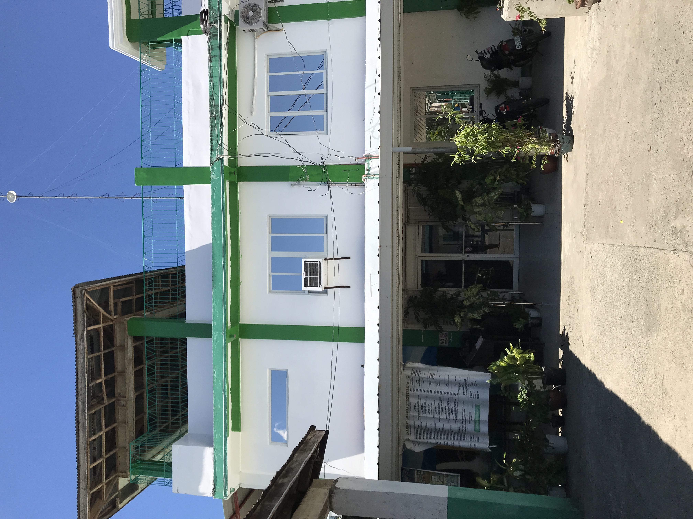
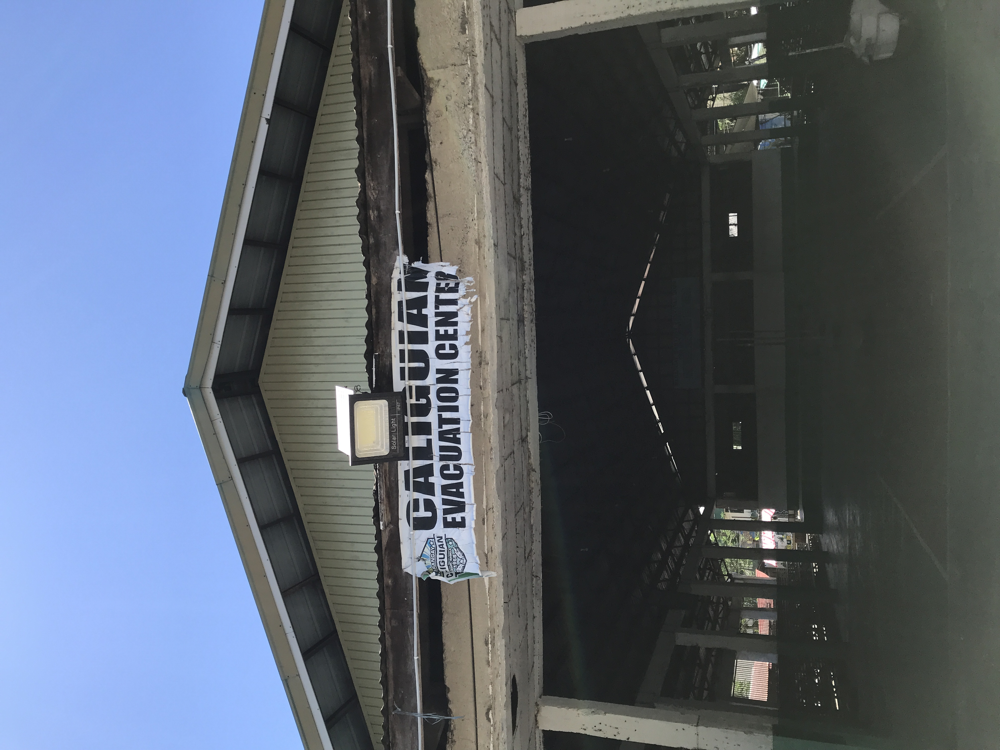
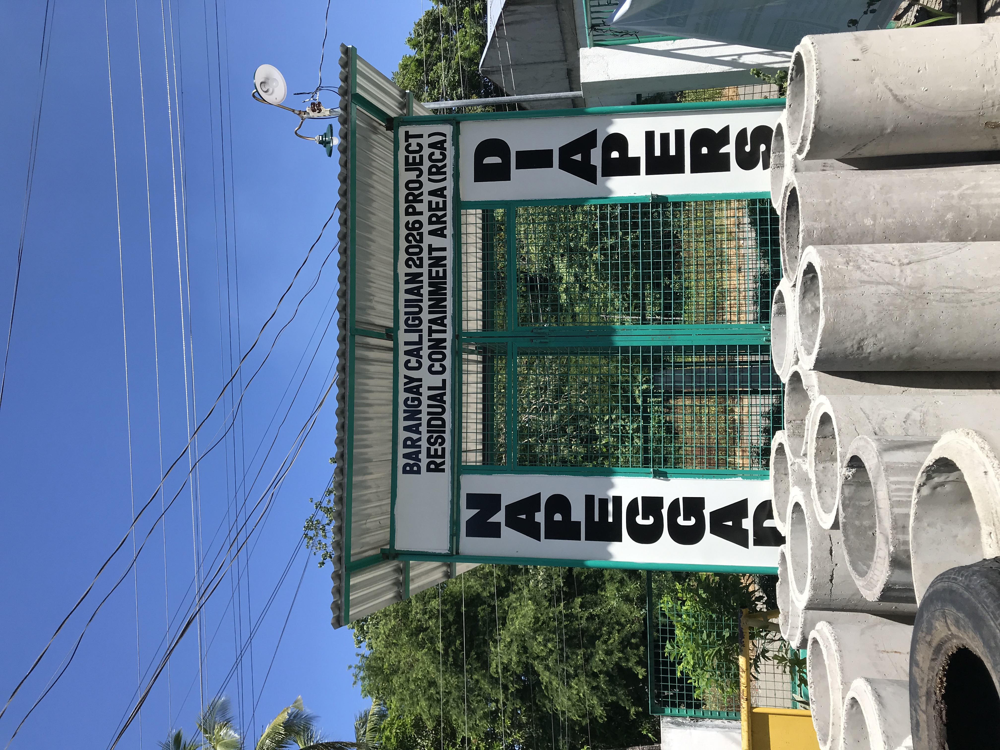
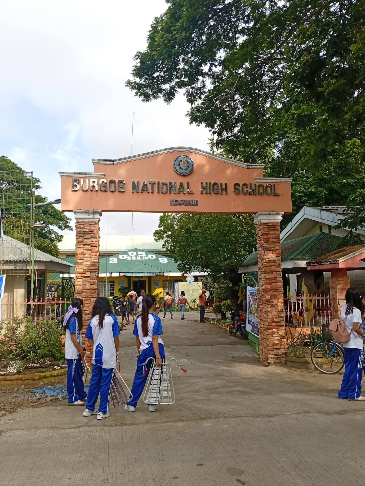
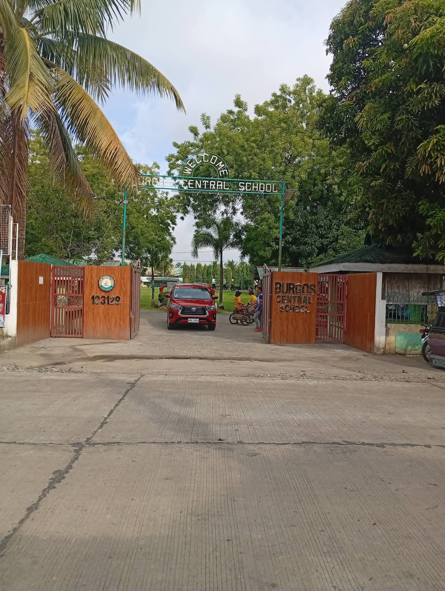
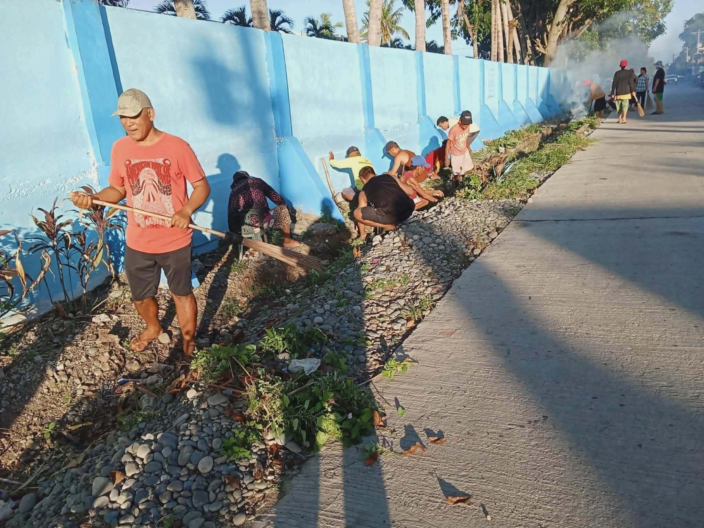

Republic of the Philippines · Cagayan Valley Region
Barangay Caliguian, formerly known as Poblacion, is the largest and most populous barangay in the Municipality of Burgos, Province of Isabela, Philippines. It serves as the town center of Burgos — the seat of the municipal government and the hub of commerce, education, and community life.
Located in the Cagayan Valley Region (Region II), Caliguian is situated at approximately 17.0667° N, 121.6913° E in the island of Luzon. It is surrounded by the barangays of Malasin and other neighboring communities of Burgos.
The barangay is primarily an agricultural community, with rice and corn farming as the main economic activities. As the Poblacion, it also hosts commercial establishments, government offices, and public institutions that serve the entire municipality.
| Official Name | Barangay Caliguian (Poblacion) |
| Former Name | Poblacion |
| Municipality | Burgos, Isabela |
| Province | Isabela |
| Region | Region II — Cagayan Valley |
| Coordinates | 17.0667° N, 121.6913° E |
| Distance from Ilagan City | 32 km northeast |
| Distance from Manila | approximately 413.54 km |
| Population (2020) | 6,925 residents |
| Classification | Urban Barangay (Poblacion) |
"Caliguian — where the heart of Burgos beats. From its people, its land, and its spirit, this barangay continues to grow and serve its community with pride."
The Municipality of Burgos was established on May 18, 1967 through Republic Act No. 4877, which separated specific barrios — including Caliguian — from the neighboring municipalities of Gamu and Aurora to form a new independent local government unit.
The town was named after the Ilocano martyr Fr. José Burgos, one of the famous GOMBURZA martyrs of Philippine history. The majority of the population in Burgos, including Caliguian, is composed of Ilocanos, reflecting a rich cultural heritage deeply rooted in Northern Philippines tradition.
As the Poblacion, Caliguian has always been the initial seat of government of Burgos. One significant milestone in its history was the establishment of the Caliguian National High School, formalized through Proclamation No. 550 signed by President Corazon C. Aquino, which reserved a parcel of public land specifically for the school.
Over the decades, Caliguian has grown from a small barrio into a
quiet farming village vibrant and progressive community
— from a population of 5,506 in 1990 to
6,925 in 2020, showing steady and consistent growth.
Barangay Caliguian is governed by duly elected officials who serve the community under the Republic Act 7160.
| Position | Name | Remarks |
|---|---|---|
| Punong Barangay (Captain) | Maria Encarlonia L. Gragasin | Chief Executive/Barangay Captain |
| Barangay Councilor | Luis D. Foronda jr. III | Legislative Body/Kagawad |
| Barangay Councilor | Mark Anthony D. Corpuz | Legislative Body/Kagawad |
| Barangay Councilor | Elclarie John P. Pacol | Legislative Body/Kagawad |
| Barangay Councilor | Victorlevy S. Albano | Legislative Body/Kagawad |
| Barangay Councilor | Christopher M. Ramirez | Legislative Body/Kagawad |
| Barangay Councilor | Jeerel-Jan P. Garcia | Legislative Body/Kagawad |
| Barangay Councilor | Sherwin P. Duco | Legislative Body/Kagawad |
* This list is based on the recent elections
As the Poblacion of Burgos, Barangay Caliguian is home to the most complete set of government and community facilities in the municipality.
Seat of local government. Houses the Office of the Mayor, Municipal Council, and other government offices serving all 14 barangays of Burgos.
Provides primary healthcare services to residents including medical consultations, immunizations, maternal care, and health programs.
Main trading center of Burgos. Vendors sell fresh produce, fish, meat, dry goods, and other commodities serving the entire municipality.
Various sari-sari stores, small businesses, eateries, and service establishments that support the daily needs of residents.
Bureau of Fire Protection (BFP) station serving the municipality. Responds to fire incidents and other emergency situations.
Philippine National Police (PNP) station ensuring peace and order in Burgos. Serves all barangays within the municipality.
Issues barangay clearances, certificates of indigency, barangay IDs, and handles community disputes through Lupong Tagapamayapa.
Provides support to local farmers through programs, technical assistance, and agricultural development initiatives in the municipality.
Caliguian is the educational center of Burgos, hosting both elementary and secondary schools that serve students from across the municipality.
| Burgos National High School |
Public Secondary School formerly known as Caliguian National High School Established through Proclamation No. 550 by President Corazon C. Aquino. Offers Junior High School and Senior High School programs under DepEd. |
| Burgos Central School |
Public Elementary School Provides basic education (Grades 1–6) to children in Caliguian and neighboring barangays. Managed by the Department of Education — Division of Isabela. |
| Day Care Center |
Early Childhood Education Provides early childhood care and development (ECCD) programs for children ages 3–5 managed by the barangay under the DSWD framework. |
"Education is the most powerful weapon which you can use to change the world." — Nelson Mandela
Faith is a cornerstone of community life in Barangay Caliguian. The barangay is home to its parish church which has served as the spiritual home of the people of Burgos for generations.
| Parish Church |
Saint Joseph Parish Church Burgos, Isabela The main Catholic church serving the municipality of Burgos. Holds regular Sunday masses, sacraments, and community religious events throughout the year. |
| Religion | Predominantly Roman Catholic, with other Christian denominations also present in the community. |
| Patron Saint | Saint Joseph — celebrated annually with the town fiesta |
| Town Fiesta | Celebrated annually in honor of the town's patron saint, featuring religious processions, cultural activities, and community gatherings. |
The church plays an important role in the spiritual, cultural, and social life of the community. Religious gatherings, fiestas, and community celebrations are central to the identity of Caliguian as a close-knit barangay.
Caliguian is the most populous barangay in Burgos, accounting for 26.59% of the municipality's total population.
| Population (1990) | 5,506 residents |
| Population (2015) | 6,433 residents |
| Population (2020) | 6,925 residents |
| Annual Growth Rate | 1.56% (2015–2020) |
| Total Households (2015) | 1,570 households |
| Average Household Size | 4.10 members per household |
| Share of Burgos Population | 26.59% — largest barangay |
| Largest Age Group | 5–9 years old (668 individuals) |
| Smallest Age Group | 75–79 years old (72 individuals) |
| Total Population (2024) | 26,729 people |
| Total Barangays | 14 barangays |
| Population Density | 370 inhabitants per km² |
| Main Livelihood | Rice and corn farming — one of the highest producers in Isabela |
| Legislative District | 5th District of Isabela |
In case of emergency, please contact the following hotlines immediately. Your safety is our priority.
| Agency | Description | Contact Number |
|---|---|---|
| 🚨 PNP Emergency Hotline | Philippine National Police — nationwide emergency | 911 |
| 👮 PNP Burgos Station | Local police station serving Burgos, Isabela | (+63 915 727 1471) |
| 🚒 Bureau of Fire Protection | Fire emergency — BFP Burgos Station | (09171253320) |
| 🚑 Red Cross Isabela | Philippine Red Cross — Isabela Chapter | (078) 323-3444 |
| ⚡ NDRRMC | National Disaster Risk Reduction — emergency | 8911 or (02) 8911-5061 |
| 📞 Isabela Provincial Capitol | Provincial government emergency line | (078) 682-1045 |
⚠️ In case of life-threatening emergencies, dial 911 immediately. For barangay-level concerns, proceed to the Barangay Hall during office hours: Monday to Friday, 8:00 AM — 5:00 PM.
A glimpse of life, places, and events in Barangay Caliguian, Burgos, Isabela:






Barangay Caliguian is located in the Municipality of Burgos, Isabela, approximately 32 kilometers southwest of Ilagan City, the provincial capital of Isabela.
| Coordinates | 17.0667° N, 121.6913° E |
| Nearby Town (SW) | San Manuel — 8 km southwest |
| Nearby Town (NE) | Quirino — 9 km northeast |
| Provincial Capital | Ilagan City — 32 km northeast |
| National Capital | Manila — approximately 413.54 km south |
For barangay concerns, service requests, or general inquiries, please contact us through any of the following:
| 🏛️ Office Address | Barangay Hall, Caliguian (Poblacion), Burgos, Isabela, Philippines |
| 📘 Facebook Account | Facebook — Barangay Caliguin |
| 🕐 Office Hours | Monday to Friday | 8:00 AM — 5:00 PM |
| 🌐 Municipality | LGU Burgos Isabela — Official Page |
| 📍 Region | Region II — Cagayan Valley, Luzon, Philippines |